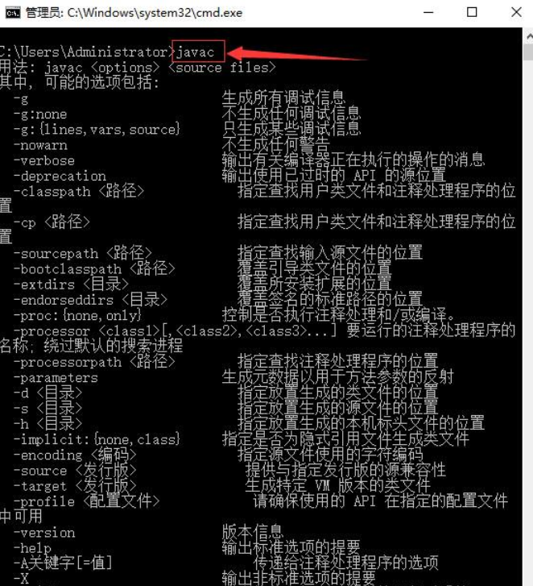

其他系统或者ios原理相同,可自行百度
需要配置太多的环境，很有可能某一步就不能通过，请不要灰心，针对出现的问题百度加以解决
C:\Users\Administrator>node -v
v10.15.1C:\Users\Administrator>weex -v
v1.3.11
3.1:新建JAVA_HOME
变量名JAVA_HOME
变量值 C:\Program Files\Java\jdk1.8.0_131你的jdk安装地址
3.2:配置CLASSPATH
变量名CLASSPATH
变量值.;%JAVA_HOME%\lib
3.3:配置PATH
变量名Path
变量值%JAVA_HOME%\bin
由于安装环境比较麻烦,请打开命令提示符(win+R,输出cmd回车),依次输入验证

就这样java环境就搭建好了
好累啊，你自己百度吧(Android Studio安装)
良心发现，放点连接
安装完Android Studio后，SDK配置环境教程
来到这里，所有的环境配置都已经完成，可以开始实干兴邦
有输入的地方直接回车，然后下载，完成后就初始化成功"awesome-app"项目了
cd awesome-appnpm installweex platform add androidnpm run buildnpm run pack:android